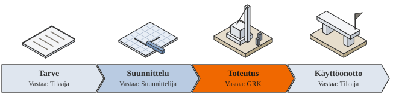
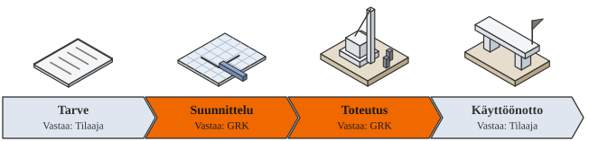
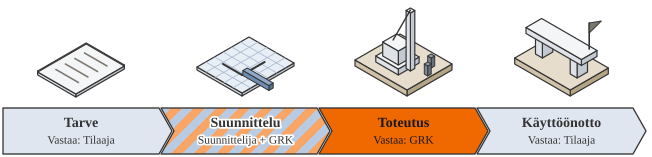
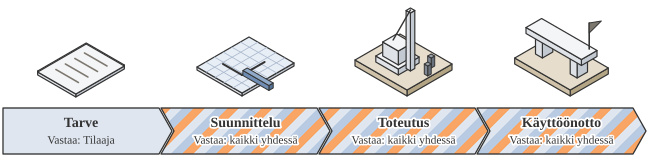

Toteutusmallit: kokonaisurakka, KVR, ST ja allianssi
Sovimme toteutusmallin hankkeen mukaan. Ero on siinä, kuka suunnittelee ja kuka kantaa vastuun. Mitä aiemmin olemme mukana, sitä enemmän voimme vaikuttaa ratkaisuihin ja kustannuksiin.
Mallit rinnakkain
Kuka vastaa missäkin vaiheessa, montako sopimusta tilaajalla on ja kuinka paljon GRK voi vaikuttaa ratkaisuihin.
| Toteutusmalli | Suunnittelu | Toteutus | Käyttöönotto | Sopimukset | Vaikutus ratkaisuihin |
|---|---|---|---|---|---|
| Kokonaisurakkatilaajan suunnitelmilla | Tilaajan suunnittelija | GRK | Tilaaja | Kaksi erillistä | Pieni: suunnitelma on jo valmis |
| KVR-urakkakokonaisvastuurakentaminen | GRK (suunnittelija alihankkijana) | GRK | Tilaaja | Yksi, tilaaja ja GRK | Suuri: suunnittelu ja toteutus samassa kädessä |
| ST-urakkasuunnittele ja toteuta | Suunnittelija ja GRK yhdessä | GRK | Tilaaja | Kaksi, GRK ohjaa suunnittelua | Suuri: rakennettavuus mukana suunnittelussa |
| Allianssiyhteinen organisaatio | Kaikki yhdessä | Kaikki yhdessä | Kaikki yhdessä | Yksi yhteinen | Suurin: ratkaisut kehitetään yhdessä |
Mallit tarkemmin
Kokonaisurakka (tilaajan suunnitelmilla)
Tilaaja teettää suunnitelmat, ja GRK rakentaa koko kohteen yhdellä urakkasopimuksella. Suunnittelu ja urakka ovat kaksi erillistä sopimusta, ja suunnitteluriski on tilaajalla.
- Sopii, kun
- Suunnitelmat ovat valmiit, ja koko kohde halutaan rakentaa yhdellä urakalla.
- Esimerkki
- Useimmat pohjarakentamisurakkamme ovat kokonaisurakoita.Verkkosaaren pohjoisosa, HelsinkiHelsingin kaupunki

KVR-urakka (kokonaisvastuurakentaminen)
GRK vastaa sekä suunnittelusta että toteutuksesta. Tilaaja määrittelee lopputuloksen ja vaatimukset, ja suunnittelija toimii GRK:n alihankkijana. Sopimuksia on yksi, ja suunnitteluriski on GRK:lla.
- Sopii, kun
- Suunnittelulle ja rakentamiselle halutaan yksi vastuutaho.

ST-urakka (suunnittele ja toteuta)
Perusratkaisut on päätetty. GRK tekee toteutussuunnittelun yhdessä suunnittelijan kanssa ja rakentaa, joten rakennettavuus on mukana jo suunnittelussa. Sopimuksia on kaksi, ja GRK ohjaa suunnittelua.
- Sopii, kun
- Perusratkaisut on päätetty, ja toteutussuunnitteluun halutaan rakentajan näkemys.
- Esimerkki
- Vt 21, EnontekiöSuunnittelusta vastaa A-Insinöörit ja rakentamisesta GRKKalkkimaan energiapuiston sähköasema, TornioOomi Solar Oy

Allianssi
Tilaaja, suunnittelijat ja GRK muodostavat yhteisen organisaation ja jakavat tavoitteet ja riskit. Sopimus on yksi ja yhteinen, ja osapuolet ovat mukana kehitysvaiheesta asti. Riskit ja hyödyt jaetaan osapuolten kesken.
- Sopii, kun
- Tilaaja haluaa kehittää ratkaisut yhdessä suunnittelijoiden ja rakentajan kanssa ja olla osapuolena koko hankkeen ajan.
- Esimerkki
- Hailuodon kiinteä yhteysVäylävirasto, AFRY ja A-InsinööritRaitiotie Kalasatamasta PasilaanKaraatti-allianssi: GRK ja AFRY

Usein kysyttyä toteutusmalleista
Millä urakkamalleilla toimitte?
Mitä eroa on KVR- ja ST-urakalla?
Voiko kanssanne keskustella jo suunnitteluvaiheessa?
Teettekö EPC-toimituksia?
Yhteyshenkilöt
Mallista sovitaan aina hankkeen mukaan. Soita suunnittelusta vastaavalle johtajalle tai oman palvelusi liiketoimintajohtajalle.
Jaakko Mäkelä
Liiketoimintajohtaja, taito- ja väylärakentaminen sekä päällystys
Kerro hankkeestasi
Muutama lause riittää. Ehdotamme hankkeelle sopivaa toteutusmallia.
Töihin GRK:lle
Infra on kasvuala, ja työn jälki näkyy pitkään. Meillä saa vastuuta niin paljon kuin uskaltaa ottaa.